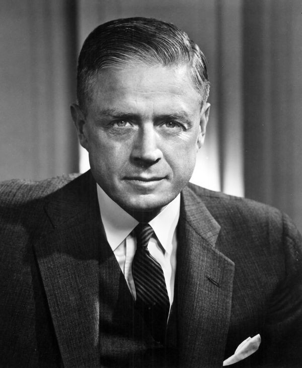

Thomas J. Watson, Sr., in full Thomas John Watson, Sr., (born February 17, 1874, Campbell, New York, U.S.—died June 19, 1956, New York, New York), American industrialist who built the International Business Machines Corporation (IBM) into the largest manufacturer of electric typewriters and data-processing equipment in the world.
| Year | Education |
| 1885-1889 | Addison Academy |
| 1890-1891 | Willer School Of Commerce |
| 1914-1956 | Chairman and CEO of IBM |